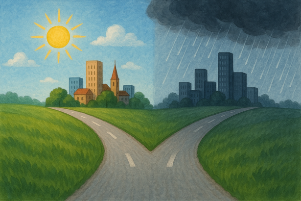
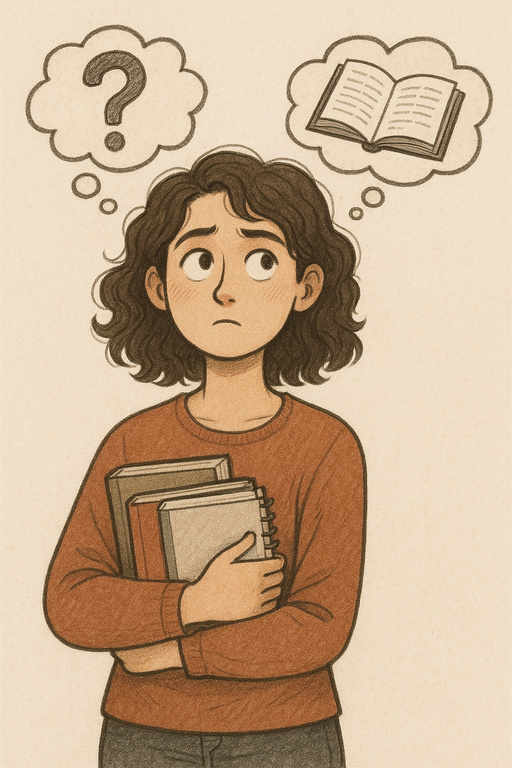

This question has been bothering me since I was 10. That might sound early to you, dear readers—but in Türkiye, people start asking this question even earlier in childhood.
The anxiety of choice
I've changed my mind many times. Movies, books, and people all influenced me. When I started studying economics at university, I thought, "I can become anything I want." Why did I think that? Because the economics department teaches you theories, models, and frameworks—but not a specific career path. It's up to you, as a student, to choose your specialization: maybe finance, sales, or even data science. It's your choice. This realization made me feel anxious because I had no idea what those fields involved.
I've done internships in both the public and private sectors—and I hated them. Sitting on a chair for 7–8 hours in a small room, surrounded mostly by older people, made me feel miserable. Once again, I found myself unsure about what I wanted to do in the future.

Finding my calling
Deep down, I always knew I wanted to become an academic—ever since my first semester at university. One of my professors had encouraged me to choose this department, and during her lectures, I felt genuinely happy. Sometimes, she would talk about her research field, and I found myself fascinated. Learning was deeply satisfying to me.
Learning was deeply satisfying to me.
But there was a problem—I had no idea how to become one. So, I started watching YouTube videos, reading posts on Ekşi Sözlük, and talking with people who were either pursuing or already working in academia. Most of them loved their jobs. A few didn't. But at least I had a chance to build a roadmap.
The steps seemed straightforward: maintain a high GPA, be social, and develop strong language skills. I worked hard to do all of that. And now, as a graduate candidate, I can confidently say that I did those things.
Defining what I don't want
This may sound selfish or egotistical, but I appreciate myself for that. Still, I had questions. Will I be happy? Is this career path truly suitable for me? I was afraid of ending up hating my job—and honestly, that was my biggest fear.
So, I made a list of what I didn't want to do. This list was shaped by my own experiences and the stories I heard from friends or professionals in those sectors:
I don't want to work at a bank.
I don't want to work in a human resources department.
I don't want to work as a consultant…

This list helped me. I realized that the path ahead was clearer than I had thought. Yes, sometimes I felt anxious, unhappy, and overwhelmed. But every time I completed a step, I felt proud—sometimes even joyful.
Moving forward with purpose
Now, I feel ready to keep going. I'm ready for the obstacles, the challenges, and even the tears. And strangely, deep down, I find a kind of satisfaction in facing those difficulties.
I may not have all the answers. But I know I'm on the right path—and for now, that's enough.